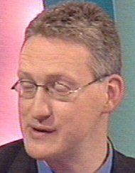

Tuesday, January the 24th, 2006
back to: title, date or indexes
Dobson was hopeless at identifying bones which had been gnawed by wild animals, but that did not stop him trying. Sometimes, if he tired of leaning on a fence watching pigs in a sty, he would go and get his big spade and dig up bones. He had a few favourite locations, such as the perimeter fence of the zoo, and the aerodrome, and he always came home with a sackful.
“Look!” he would shout, brandishing one of his finds at Marigold Chew, “If I am not mistaken this is the leg bone of a weasel which has been gnawed by a pony!”, or “Look!” he might say, “I'll wager this is the tibia of an arctic hare that has been gnawed by a squirrel!” He was invariably wrong.
Dobson mounted his bones on rectangular pieces of hardboard which he then hung on the walls of what passed as his study. He added a carefully-written label to each one, on which he inscribed the date and location on which he exhumed it, the animal he supposed it came from, and the animal whose teeth-marks he purported to see as evidence of gnawing. Often these striations were not teeth-marks at all, but Dobson was adamant.
One wet February Friday, Dobson and Marigold Chew received a visit from Vlasto Pismire, a man who bore an uncanny resemblance to the meteorite-obsessed Liberal Democrat MP Lembit Opik. Pismire supplied cocoa to circuses. Having heard, erroneously, that Marigold was a past queen bee of the flying trapeze, he was hoping to sell cocoa to her for old time's sake. Quickly apprised of his mistake, Pismire was about to leave when Dobson, in an uncharacteristic fit of generosity, invited him to stay for dinner. He stayed not only for dinner but for the next four months, during which time he barely stopped talking. It is said of the poet Samuel Taylor Coleridge that he could talk for hours, fluently, entrancingly, with barely a pause, but without his interlocutors having the faintest idea what on earth he was going on about. Pismire was a man of the same kidney, and Dobson found him fascinating.
On that first evening, as they sat around the table eating pap and slops, Pismire—having been shown Dobson's collection of labelled bones—said: “I find it interesting that your surname, Marigold, is Chew, while in that other room there are all those bones which have been gnawed. Are you sure that your name is not Marigold Gnaw, and that the bones have been chewed? But of course not. I jest. If my memory serves, the OED defines chew as ”to crush, bruise, and grind to pulp, by the continued action of the molar teeth, with help of the tongue, cheeks, and saliva“, and gnaw as ”to bite (something) persistently so as to injure it or remove portions of it; to wear away by a continued biting or nibbling“, so whereas one may idly think of chewing and gnawing as similar activities, they are in fact radically different. Equally worthy of note is the fact that in this house of Chew and the gnawed, the dinner you have both so kindly provided requires neither chewing nor gnawing, being a bland thin sludge one can gulp down, bowl after bowl, without involving one's teeth one whit. It is the kind of dinner I approve of, for I like to rest my teeth as others rest their weary limbs, the better to preserve them. Speaking of which, if I were you, Dobson, I would start collecting animals' teeth as well as bones, so you could match up the gnawer with the gnawed.”

Left : Lembit Opik. Right : Vlasto Pismire
Dobson never followed this advice, but it did inspire the coda to one of his finest out-of-print pamphlets, which he began writing on the wet June day later that year when the cocoa man finally left the house. The circumstances of his departure were curious. Marigold Chew had embarked upon a mural painting of eels, using one of the walls of the dining room. Because he seemed to need no sleep, Pismire had barely moved from the dinner table throughout his stay, comfortable in his chair and prattling away irrespective of an audience. It had occurred to both Dobson and Marigold Chew that perhaps he existed in a separate time continuum and that he thought they were still having the same meal as when he had arrived in February. The fact that he never removed the napkin tucked into his shirt front supported this view.
“What I find puzzling,” said Marigold Chew to Dobson on the morning of that June day, as they trudged along the old canal towpath, “Is that when he sat down, the walls were bare. Now they are teeming with eels, yet he appears not to notice.”
“Perhaps he is a blind cocoa man,” suggested Dobson.
“Don't be ridiculous, Dobson,” snorted Marigold Chew.
As they approached the house on their return, they were astonished to find the Lembit Opik lookalike hurrying out of the front door.
“I can no longer remain in a house full of painted eels!” he shouted, looking stricken, “For I have long feared eel depictions of all kinds. If ever you invite me to dinner again, I will tell you why.”
He carried on talking, but as he scurried away his words were lost on the wild winds. Within the hour, Dobson had written the first six pages of his pamphlet Chew, Gnaw, Eel, Teeth, Pap And Slops For Dinner : A Memoir Of Vlasto Pismire, the only known copy of which is rumoured to be in the possession of the Liberal Democrat MP for Montgomeryshire. He keeps it under lock and key and will deny its existence if questioned.
Hooting Yard on the Air, January the 25th, 2006 : “A Series of Unfortunate Cows” (starts around 06:09)
Hooting Yard on the Air, May the 12th, 2016 : “Vox Pop : A Pang Hill Orphan Speaks” (starts around 16:57)